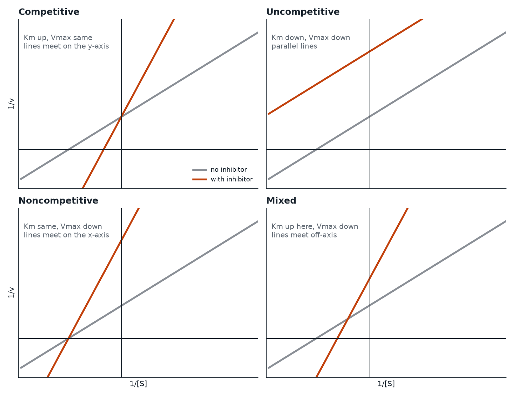

Free MCAT study note
Enzyme Inhibition Types Compared: Competitive, Noncompetitive, Uncompetitive, Mixed
Inhibition questions are some of the most predictable on the MCAT, and also some of the most commonly missed, because students memorize a table without understanding where the table came from. This note derives the table from one question: which enzyme form does the inhibitor bind? Once you can answer that, the effects on Km and Vmax follow.
Setup: the three enzyme forms
During catalysis an enzyme exists in two main forms: free enzyme (E) and the enzyme-substrate complex (ES). A reversible inhibitor (I) can latch on to E, to ES, or to both. Its dissociation from each is described by an inhibition constant: Ki for binding free enzyme and Ki' for binding ES. A small Ki means tight binding.
Because inhibitor binding is reversible, the inhibited enzyme can return to normal when the inhibitor lets go, which separates this topic from irreversible inhibitors that form covalent bonds (covered at the end).
For each type below, the effect shows up as an apparent change in Km and Vmax, meaning the values you measure in the presence of inhibitor. The true properties of the enzyme have not changed.
Competitive inhibition
Binds: free enzyme only, at the active site, competing directly with substrate.
A competitive inhibitor often resembles the substrate, though it does not have to. Because inhibitor and substrate fight for the same site, you can overwhelm the inhibitor by adding more substrate. At very high [S], almost every enzyme ends up with substrate bound, so the top speed is the same as before.
- Vmax: unchanged.
- Km (apparent): increases. It takes more substrate to reach half of Vmax. The enzyme looks as if it has lower affinity for substrate.
- Lineweaver-Burk: the lines for different inhibitor concentrations cross at the same y-intercept. The inhibited line is steeper and its x-intercept moves toward zero.
Quantitatively, Km,app = Km(1 + [I]/Ki). Doubling [I] at a [I]/Ki of 1 raises the factor from 2 to 3.
Uncompetitive inhibition
Binds: the ES complex only, at a site that exists or is revealed once substrate has bound.
Here the logic runs backward from competitive inhibition. Adding substrate makes more ES, which gives the inhibitor more to bind, so substrate does not rescue the enzyme. Trapping ES in a dead-end complex removes it from the cycle, and by Le Chatelier's principle that pulls more E toward ES. The apparent affinity for substrate goes up.
- Vmax (apparent): decreases, because inhibited ES cannot make product.
- Km (apparent): decreases, by the same factor as Vmax.
- Lineweaver-Burk: parallel lines. The slope Km/Vmax stays the same because both parameters shrink by the same factor, 1 + [I]/Ki'.
Lower Km here does not mean the inhibitor improved the enzyme. It is a side effect of removing ES from the pool. Uncompetitive inhibitors are rare in nature, and the MCAT mostly asks you to recognize the parallel lines.
Noncompetitive inhibition (pure)
Binds: free enzyme and ES with equal affinity (Ki = Ki'), at a site separate from the active site.
The inhibitor does not interfere with substrate binding, so the enzyme grabs substrate just as well with or without inhibitor. But an enzyme with inhibitor attached cannot catalyze. Effectively, some fraction of the enzyme molecules has been taken out of service, which is the same as having less enzyme.
- Vmax (apparent): decreases. It is as if you had a smaller concentration of enzyme.
- Km: unchanged. The enzyme that is still active binds substrate normally.
- Lineweaver-Burk: lines intersect on the x-axis at -1/Km, with the inhibited line having a higher y-intercept and a steeper slope.
Adding substrate cannot reverse this inhibition because substrate and inhibitor do not compete for a site.
Mixed inhibition
Binds: both E and ES, but with different affinities (Ki is not equal to Ki').
Mixed inhibition is the general case, and the other three are special cases of it. Two numbers describe it: α = 1 + [I]/Ki and α' = 1 + [I]/Ki'. The apparent values are Vmax,app = Vmax/α' and Km,app = Km × α/α'.
- Vmax (apparent): decreases.
- Km (apparent): can go either way. If the inhibitor prefers free enzyme (Ki smaller than Ki'), α exceeds α' and Km rises. If it prefers ES, Km falls.
- Lineweaver-Burk: lines intersect somewhere off both axes, to the left of the y-axis. They cross above the x-axis if the inhibitor prefers E and below it if the inhibitor prefers ES.
Many MCAT sources call this "noncompetitive" loosely and say Km may change. If a passage says an inhibitor binds an allosteric site and changes Km as well as Vmax, think mixed.

The comparison table
| Type | Binds | Vmax | Km | Overcome by more S? | L-B pattern |
|---|---|---|---|---|---|
| Competitive | E | same | up | yes | cross on y-axis |
| Uncompetitive | ES | down | down | no | parallel |
| Noncompetitive | E and ES equally | down | same | no | cross on x-axis |
| Mixed | E and ES unequally | down | up or down | no | cross off-axis |
A fast way to keep them straight
- Where does it bind? Free enzyme only means competitive. ES only means uncompetitive. Both equally means noncompetitive.
- Can substrate beat it? Only competitive inhibition is overcome by flooding the system with substrate.
- What happens to Vmax? If it is unchanged, the inhibitor is competitive. Otherwise Vmax falls.
- Where do the L-B lines meet? On the y-axis means competitive, on the x-axis means noncompetitive, parallel means uncompetitive.
Irreversible inhibition
Some inhibitors bond covalently to the enzyme and do not come off. Examples include aspirin acetylating a serine residue of cyclooxygenase, and penicillin forming a covalent bond with the transpeptidase that builds bacterial cell walls. Because the damaged enzyme molecules are permanently out of action, the effect looks like having less enzyme: Vmax falls and Km of the remaining enzyme is unchanged, similar to noncompetitive inhibition. The difference is that the effect does not reverse when you dilute or remove the free inhibitor. Only making new enzyme restores the activity.
Real-world examples that fit the categories
- Competitive: methotrexate competing with dihydrofolate for dihydrofolate reductase; ethanol is used to treat methanol poisoning because it competes for alcohol dehydrogenase.
- Allosteric inhibitors: these bind outside the active site and often look noncompetitive or mixed in a simple analysis. Feedback inhibition of phosphofructokinase-1 by ATP is a regulatory example. Cooperative allosteric enzymes give sigmoidal curves, so the hyperbolic rules above are only an approximation for them.
- Uncompetitive: lithium inhibiting inositol monophosphatase is the classic textbook example.
Common traps
- "Noncompetitive means the inhibitor binds somewhere else, so Km must change." In the pure case, it does not.
- "Lower Km means a better enzyme." In uncompetitive inhibition the lower Km comes with a lower Vmax, so the enzyme is worse overall.
- Confusing the inhibitor's Ki with the enzyme's Km. Ki describes the inhibitor, and Km describes substrate.
- Forgetting that more substrate does nothing against anything except competitive inhibition.
Check yourself: 5-question mini-quiz
1. A drug binds the active site of an enzyme and structurally resembles its substrate. Predict its effect on Km and Vmax.
It is competitive. Apparent Km increases and Vmax is unchanged, because enough substrate can outcompete the drug.
2. Lineweaver-Burk lines for an enzyme with and without an inhibitor are parallel. Which type of inhibition is this, and what happened to Km and Vmax?
Uncompetitive inhibition. Both apparent Km and Vmax decreased by the same factor, so the slope Km/Vmax is unchanged and the lines are parallel.
3. Increasing substrate concentration fails to restore full activity, and the measured Km is unchanged. What type of inhibitor is most consistent?
A pure noncompetitive inhibitor. Vmax drops (not rescued by substrate) while Km stays the same, since it binds E and ES equally at a site separate from the active site.
4. In mixed inhibition, an inhibitor binds free enzyme much more tightly than ES. Does the apparent Km go up or down?
Up. With Ki smaller than Ki', alpha exceeds alpha', and Km,app = Km x alpha/alpha' is larger than Km. Vmax still decreases.
5. Why does penicillin's effect not reverse when excess free penicillin is washed away?
Penicillin forms a covalent bond with its target enzyme, so it is an irreversible inhibitor. The affected enzyme molecules remain inactivated, and only newly synthesized enzyme restores activity.